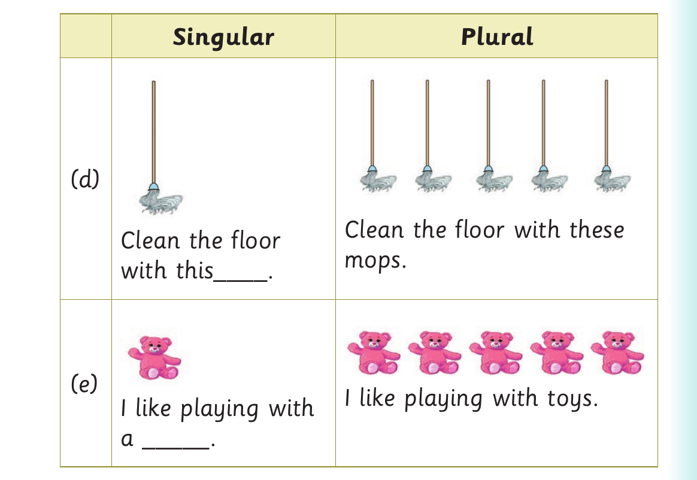
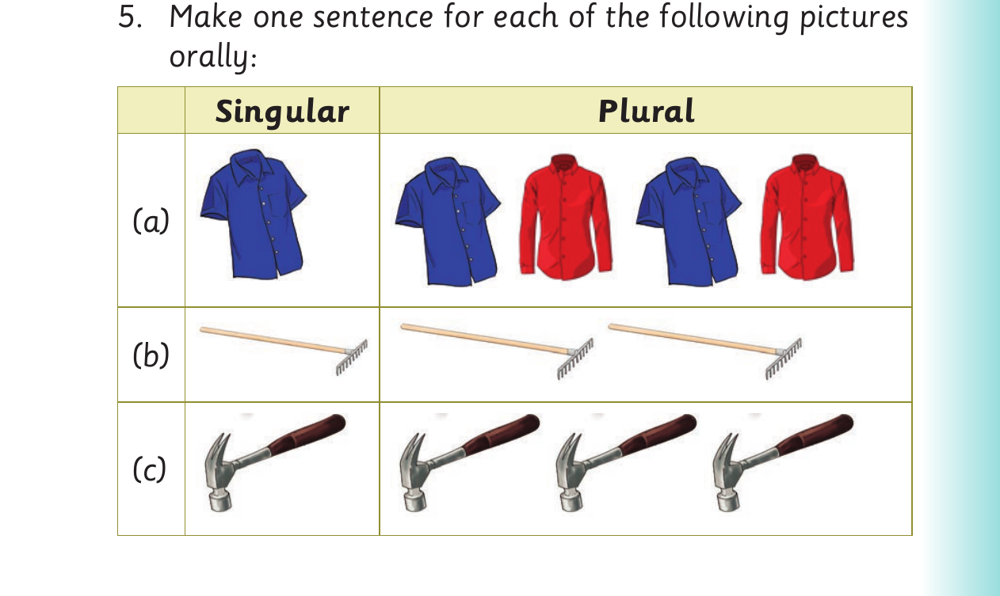

Singular and plural forms - sentences and pictures continued

For Singular and plural forms - sentences and pictures continued, panel 1 of 2 presents the source activity with these printed labels and instructions: Singular Plural (d) Clean the floor with these Clean the floor mops. with this____. (e) I like playing with toys. I like playing with a _____.
Singular Plural
(d)
Clean the floor with these
Clean the floor
mops.
with this____.
(e)
I like playing with toys.
I like playing with
a _____.

For Singular and plural forms - sentences and pictures continued, panel 2 of 2 presents the source activity with these printed labels and instructions: 5. Make one sentence for each of the following pictures orally: Singular Plural (a) (b) (c)
5. Make one sentence for each of the following pictures
orally:
Singular Plural
(a)
(b)
(c)